3개 국제 표준 기반 21종 자동 점검 규칙 상세
Verify 시스템은 3개 국제 표준(ASD-STE100, MIL-STD-961E, MIL-STD-38784B)에서 도출한 21종 규칙으로 기술 문서 품질을 자동 점검합니다. 78건의 원본 조항을 분석하여 33건(42%)을 자동화했으며, Acrolinx 방식의 밀도 스코어링으로 품질을 수치화합니다.
이 문서는 각 규칙이 무엇을 검사하고, 어떤 기준으로 판정하는지를 다루는 실무 레퍼런스입니다. "Verify 사용법"이 화면 조작을 다루는 반면, 이 문서는 규칙의 내용과 판정 근거에 초점을 맞춥니다.
| 표준 | 분량 | 대상 |
|---|---|---|
| ASD-STE100 Issue 7 | 382페이지 | Simplified Technical English. 기술 영어 작성 규칙 49건. |
| MIL-STD-961E Rev E | 111페이지 | 군용 규격서 구조/서식 요구사항 13건. |
| MIL-STD-38784B Rev B | 138페이지 | 기술교범(TM) 작성 규칙 10건. |

Verify 3-모드 허브 — 비교, 유사도, 규칙 검증
| 모드 | 기술 | 용도 |
|---|---|---|
| 문서 비교 | jsdiff + AI 의미 분류(6태그) | 원본 vs 수정본 단어 수준 Diff, 변경 유형 자동 분류 |
| 유사도 검사 | Winnowing (L1) + bge-m3 (L3) | 두 문서 간 구간별 유사도 측정, 유사 구간 하이라이트 |
| 규칙 검증 | 정규식 + 휴리스틱 (21종) | 작성 기준 자동 점검, 품질 스코어 산출 |
Simplified Technical English 작성 규칙 중 자동화 가능한 12건입니다.
STE 승인 단어 사전에 등록되지 않은 단어를 감지합니다.
판정: 비승인 단어 사용 시 warning. 구현: 사전 룩업.
항공기, 시스템, 부품 등 기술 고유명사를 화이트리스트로 관리합니다. 등록된 기술명은 STE 사전 검사에서 제외됩니다.
판정: 화이트리스트 등록 여부. 구현: 사전 룩업.
동일 문서 내에서 같은 의미를 다른 단어로 표현하는 경우를 감지합니다 (예: remove / take away).
판정: 동의어 그룹 내 복수 단어 사용 시 warning. 구현: 동의어 사전 매칭.
연속된 명사가 3단어를 초과하면 가독성이 떨어집니다 (예: "engine oil filter element" → 4단어).
판정: 3단어 초과 시 suggestion. 구현: 정규식. 신뢰도: low (복합 명사 오탐 가능).
절차문에서 수동태 사용을 감지합니다. STE는 능동태 사용을 권장합니다.
판정: 수동태 패턴 검출 시 suggestion. 구현: 정규식. 신뢰도: low (be+pp 패턴 한계).
절차(Procedure) 유형 문장은 20단어를 초과하지 않아야 합니다.
판정: 20단어 초과 시 warning. 구현: 단어 수 카운트.
설명(Description) 유형 문장은 25단어를 초과하지 않아야 합니다.
판정: 25단어 초과 시 warning. 구현: 단어 수 카운트.
하나의 단락이 6문장을 초과하면 분리를 권장합니다.
판정: 6문장 초과 시 suggestion. 구현: 문장 수 카운트.
안전 경고 문구(WARNING, CAUTION)의 표기 형식을 점검합니다.
판정: 형식 미준수 시 error. 구현: 구조 패턴 매칭.
목록 항목(list item), 제목(title), 표 셀(table cell) 등의 단어 수 제한입니다.
판정: 제한 초과 시 warning. 구현: 단어 수 카운트.
군용 규격서 구조와 서식 요구사항입니다.
규격서가 표준 6섹션 구조(Scope, Applicable Documents, Requirements, Verification, Packaging, Notes)를 갖추었는지 점검합니다.
판정: 누락 섹션 발견 시 error. 구현: 구조 패턴 매칭.
섹션 번호(1., 1.1, 1.1.1)가 연속적이고 건너뜀 없이 이어지는지 확인합니다.
판정: 번호 건너뜀 또는 중복 시 error. 구현: 상태 추적.
약어 첫 사용 시 풀네임을 괄호와 함께 표기했는지 점검합니다 (예: "Light Detection And Ranging (LIDAR)").
판정: 미정의 약어 사용 시 warning. 구현: 상태 추적 + 정규식.
요구사항에는 shall, 계약자 의무에는 will,
권고에는 should, 허용에는 may를 사용해야 합니다.
판정: 혼용 시 warning. 구현: 정규식 + 수치 카운트.
Table 1, Table 2 / Figure 1, Figure 2 번호가 순차적이고, 각각 제목이 있는지 확인합니다.
판정: 번호 누락 또는 제목 미기재 시 warning. 구현: 정규식 + 상태 추적.
본문에서 참조하는 섹션, 표, 그림 번호가 실제로 존재하는지 확인합니다.
판정: 미존재 참조 시 error. 구현: 정규식 + 사전 룩업.
요구사항 항목 구조, 참고 문서 형식, 부록 번호 체계를 점검합니다.
판정: 형식 미준수 시 warning. 구현: 구조 패턴 매칭.
기술교범 작성 규칙입니다. 일부는 961E/STE 규칙과 통합 적용됩니다.
| 규칙 ID | 규칙명 | 통합 여부 |
|---|---|---|
| 38784B-01 | 약어 풀네임 병기 | 961E-S03과 통합 |
| 38784B-02 | shall / will 구분 | 961E-S04와 통합 |
| 38784B-03 | WARNING 배치 및 서식 | STE 7.1과 연계, 위치 규칙 추가 |
| 38784B-04 | CAUTION 배치 및 서식 | WARNING과 동일 패턴 |
| 38784B-05 | 표 번호 체계 | 961E-S05와 통합 |
| 38784B-06 | 문장 간결 | STE 5.1/6.3으로 커버 |
표준 외에 실무적으로 유용한 규칙을 추가 구현했습니다.
| 규칙 ID | 규칙명 | 설명 |
|---|---|---|
| CUSTOM-01 | 용어 통일성 | 동일 개념에 대해 문서 내에서 서로 다른 용어 사용을 감지 |
| CUSTOM-02 | 빈 섹션 감지 | 제목만 있고 내용이 없는 섹션을 경고 |
| CUSTOM-03 | TBD/TBR 잔류 | 미확정 항목(To Be Determined/Resolved)이 남아있는지 감지 |
| CUSTOM-04 | 중복 단락 | 동일하거나 유사한 단락이 반복되는지 검사 |
| CUSTOM-05 | 숫자 단위 일관성 | 동일 물리량에 대해 서로 다른 단위 사용을 감지 |
| CUSTOM-06 | 참조 문서 유효성 | 참조된 외부 문서 번호 형식 검증 |
Acrolinx 밀도(density) 방식으로 품질을 수치화합니다.
| 심각도 | 가중치 | 의미 |
|---|---|---|
| error | 5 | 구조적 결함, 반드시 수정 필요 |
| warning | 2 | 작성 기준 미준수, 수정 권장 |
| suggestion | 1 | 개선 권고, 선택적 수정 |
| 신뢰도 | 계수 | 의미 |
|---|---|---|
| high | 1.0 | 오탐 가능성 낮음 (사전 룩업, 번호 체계) |
| medium | 0.7 | 대부분 정확 (단어 수, 구조 패턴) |
| low | 0.4 | 오탐 가능 (수동태 감지, 명사 클러스터) |

규칙 검증 및 스코어링 흐름
각 위반의 가중 합계를 단어 수로 나누어 밀도(density)를 구하고, 임계값(기본 5.0) 대비 점수를 산출합니다.
| 등급 | 점수 범위 | 의미 |
|---|---|---|
| A | 90 ~ 100 | 우수. 주요 위반 없음. |
| B | 70 ~ 89 | 양호. 경미한 개선 필요. |
| C | 50 ~ 69 | 보통. 다수 위반 존재. |
| D | 0 ~ 49 | 미흡. 전면 재검토 필요. |
| 도구 | STE 커버리지 | 특징 |
|---|---|---|
| HyperSTE | 62% | STE 전문 상용 도구. NLP 기반 고정밀 분석. |
| Acrolinx | 범용 | 기업용 문서 품질 플랫폼. 커스텀 규칙 지원. |
| Vale | YAML 기반 | 오픈소스 linter. YAML 규칙 정의, CI/CD 통합. |
| 본 시스템 | 24% | STE + MIL-STD 15건 통합. 폐쇄망 동작. 유사도/비교 포함. |
| 구현 방식 | 건수 | 대표 규칙 |
|---|---|---|
| 정규식 (Regex) | 10건 | 수동태 감지, shall/will, 약어 패턴 |
| 수치 카운트 | 5건 | 단어 수 제한, 문장 수 제한 |
| 사전 룩업 | 4건 | STE 승인 단어, 기술명 화이트리스트 |
| 구조 패턴 | 8건 | 6섹션 구조, WARNING 배치, 표 번호 |
| 상태 추적 | 3건 | 번호 연속성, 약어 첫 사용, 교차참조 |
| 휴리스틱 | 3건 | 명사 클러스터, 용어 통일, 단위 일관성 |
관리자 설정 > Verify 탭에서 개별 규칙을 활성/비활성할 수 있습니다. 조직의 작성 기준에 맞지 않는 규칙은 비활성하여 불필요한 경고를 줄일 수 있습니다.
약어 검사에서 오탐이 발생하면 해당 약어를 화이트리스트에 추가합니다. 조직 내에서 통용되는 약어(예: KF-21, AESA)는 미리 등록하면 검사 정확도가 향상됩니다.
DENSITY_THRESHOLD(기본 5.0)를 조정하여 채점 엄격도를 변경할 수 있습니다. 임계값을 낮추면 같은 위반 수에서도 점수가 더 낮아져 엄격해집니다.
backend/rules/ 디렉토리에 JSON 파일을 추가하면
서버 재시작 시 자동으로 규칙 엔진에 로드됩니다. 코드 수정이 불필요합니다.